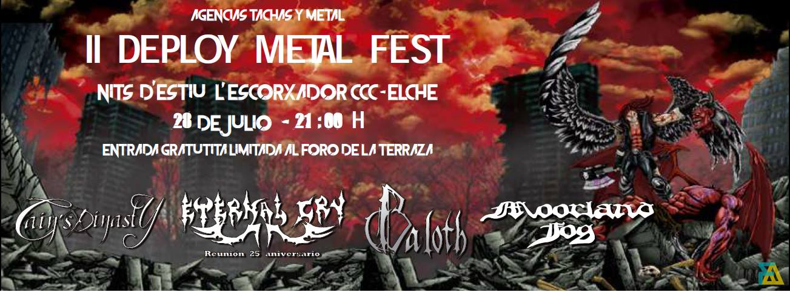

II Deploy Metal Fest
El próximo II Deploy Metal Fest viene cargado del mejor metal de la mano de Cain's Dinasty el próximo 28 de Julio de 2018 en Elche y con entrada gratuita.
Además nos acompañarán Eternal Cry en su reunión de 25 aniversario, Baloth con su tremendo death metal y Moorland Fog.
Será una noche sin precedentes a la que no podéis faltar. Patrocinado por Tachas y Metal.
¿Cómo llegar?